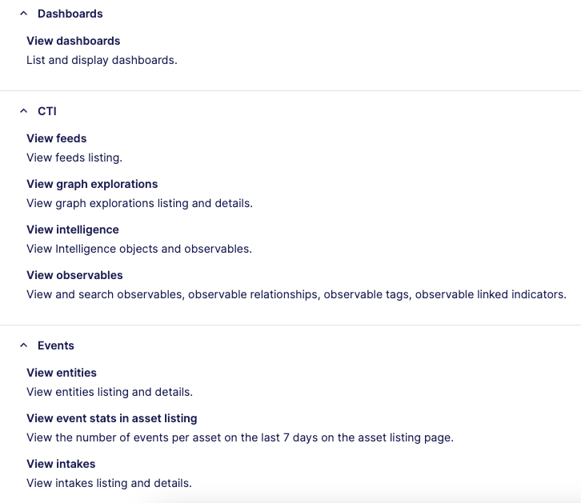

How to setup a Sekoia Connector
Overview
Follow this page to send alerts from Sekoia.IO to Nybble Hub.
It requires a Hub connector, Sekoia playbook and SSO for our analysts (with restricted role).
Note
Starting at release 2024.06.01, the SSO can be optional. However, it drastically restrict analysis and decision capabilities of our Nybblers.
To disable SSO, skip chapters 1 and 3 of this documentation.
1. Sekoia: Start SSO configuration
Note
Sekoia SSO documentation : https://docs.sekoia.io/getting_started/sso/openid_connect/
Our analysts will use SSO to connect to your Sekoia community.
Our usernames always finishes by @nybble.bzh so you have to validate this domain.
After validation, copy the Single Sign-on URL (usually https://app.sekoia.io/user/oidc/<some_uuid>), it will be used to create the Nybble connector.
It also requires a custom, specific role to restrict Nybble analysts to accurate permissions.
Create a role called nybble_analysts with following permissions :

2. Nybble Hub connector
- Connect to Nybble Hub using your usual credentials
- Go to Settings > Connectors
-
Add a Sekoia connector then fill the form:
Field Explanation Usual value Display Name name to display during authentication and in hub configs sekoiaSSO Login URL sekoia specific URL for SSO (previous step) https://app.sekoia.io/user/oidc/<some_uuid> -
Click on Save
Warning
At this stage, connector password will be generated and available in a popup.
Be sure to copy and store this password in a secure location as it will not be displayed anymore !
You can always reset it afterwards, but you will have to update the sekoia account with the new value. -
Download the SSO configuration file.
3. Sekoia: Finish SSO configuration
-
Fill the rest of the Sekoia SSO configuration:
Field Explanation Value Create account To create Nybble accounts at 1st connection YesRole by default Custom restricted role nybble_analystsSSO configuration > Authentication Provider URL Nybble SSO URL https://auth.nybble-analytics.io/SSO configuration > Client ID Hub connector clientID see downloaded file SSO configuration > Client Secret Hub connector client secret see downloaded file -
Click on Save Changes.
4. Sekoia : playbook
Nybble has developed a sekoia integration:
- playbook template
- playbook action : send alert
Account
- Go to Playbooks -> Accounts -> new, and search for Nybble
- Fill the form with:

Playbook
Note
For each alert you will send to Nybble, please contact our Professional Services
They will confirm the proper integration of the Sekoia rule in Nybble Hub, especially for custom rules.
- Go to Playbooks -> New Playbook -> use a template -> search for nybble
- Configure the step
Alert Createdby defining the Trigger Configuration - Select the appropriate account(s) per each step
- Save and activate